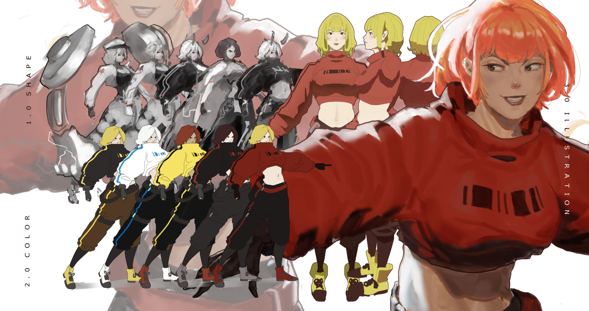
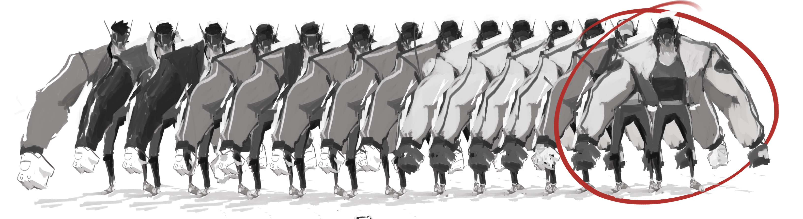
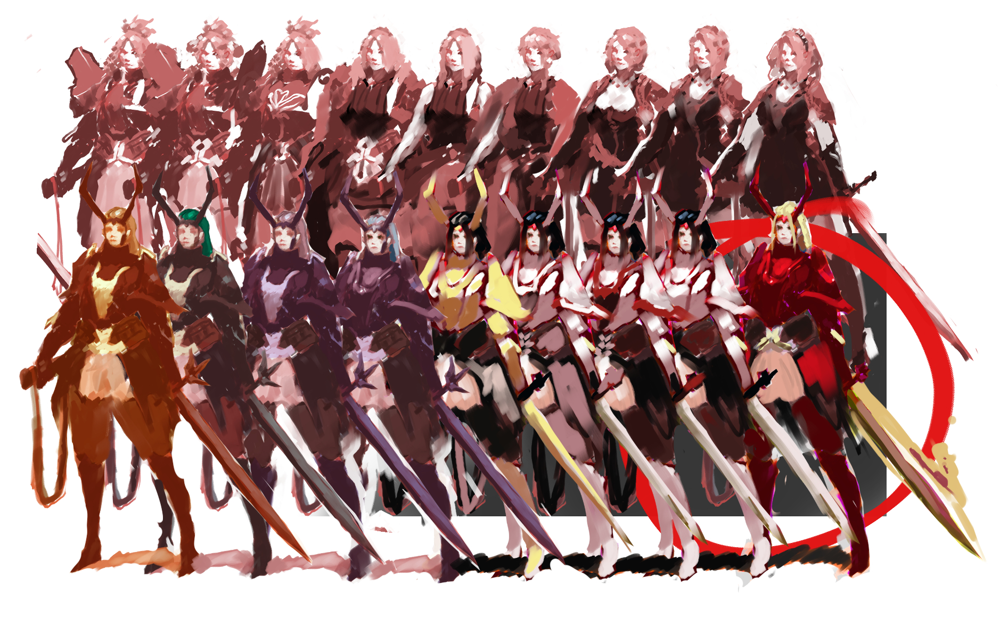
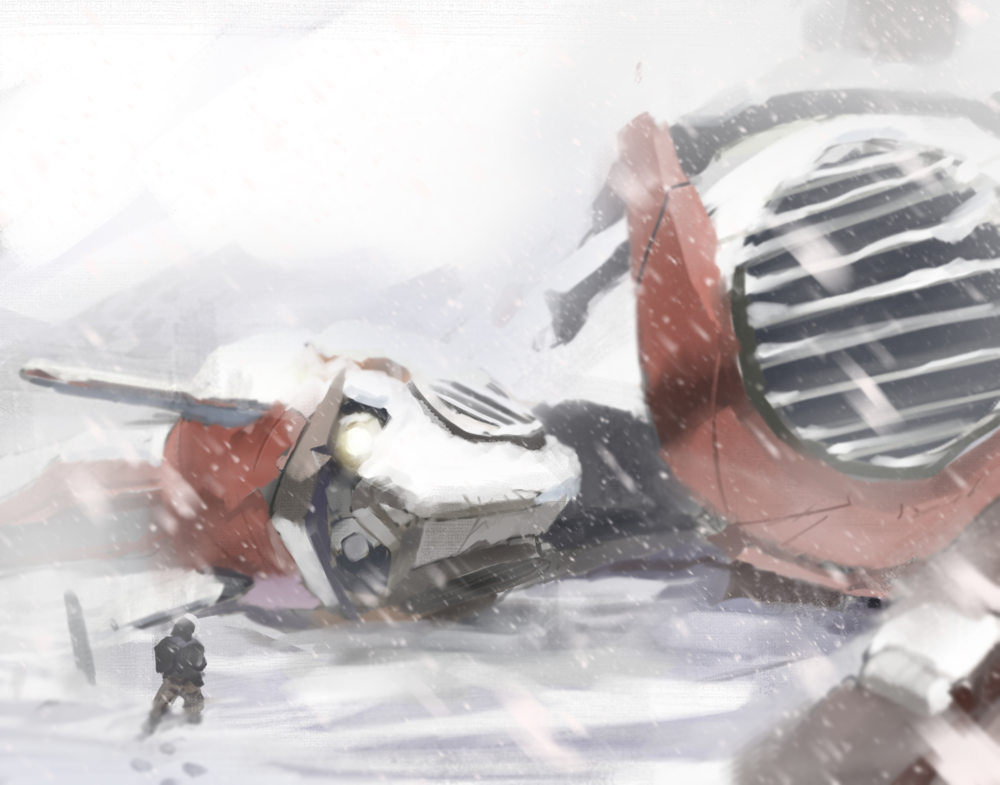
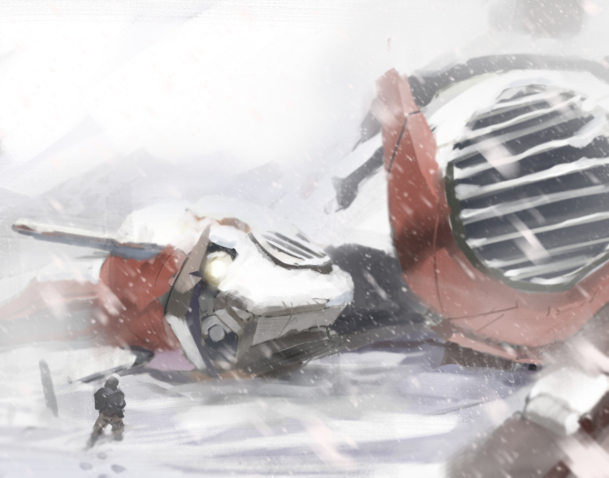
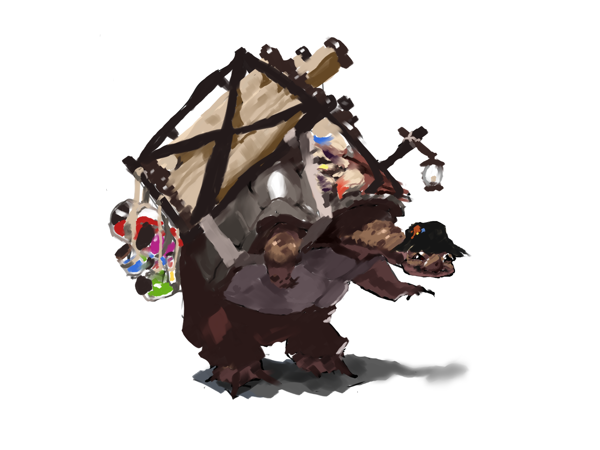
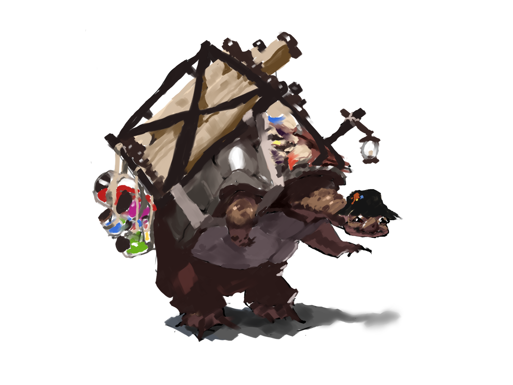

visual arts
Concept art
For a few of my projects I produced concept art to illustrate
visual ideas with an emphasis on the speed of production.


Animation & 3D
This is a selection of animations from a 2D Fighter I developed.
The following videos where created using both After Effects and Live2D( a 2D rigging software)
add Maya stuff maybe blender and v-tuber model
Character Design
My design process is based on repeated itereation. It seperates color from shape to maintain focus.
when working with a client I will first create a few greyscale general themes. once they choose a theme, I will
produce more fine tuned greyscal designs. After one of these designs is chosen, I will iterate through a few
color designs until the end result is accomplished.



Illustration
The following illustrations show examples of light, atmospheric perspective,
ambient occlusion, optical bloom, sub surface scattering
and other visual phenomena.
 

 
